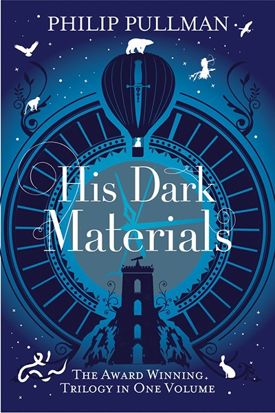
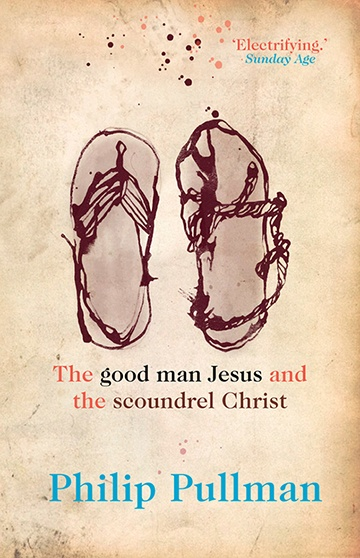
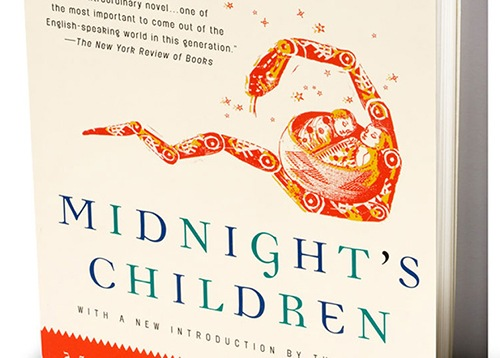
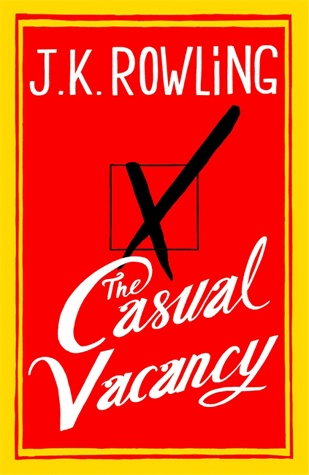
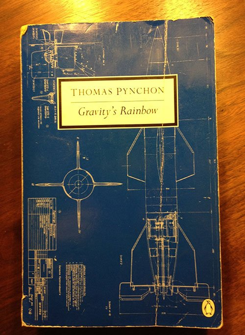
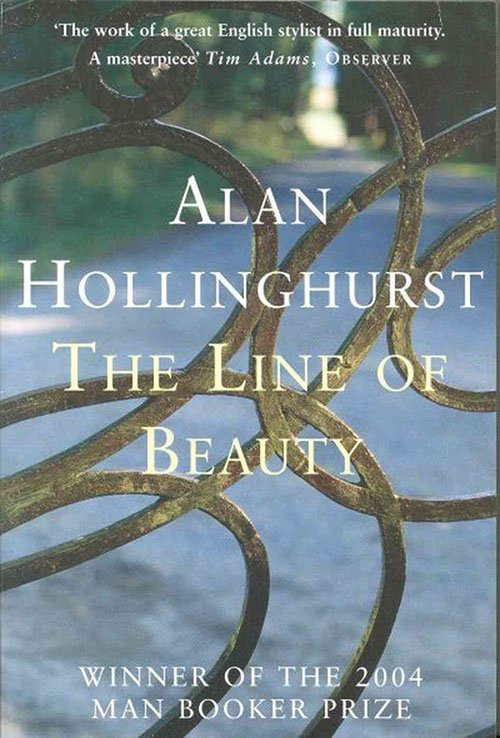

Several days ago a very close friend asked me to help him with a certain job application. It wasn’t the first time something like that happened. I have always been the go-to person with my friends when they needed a hand with their job or scholarship applications.
It couldn’t be due to the experience. I have actually had the same number of jobs as he has. Apparently, what all my friends come to me for is my writing. I did not understand why for a long while, but now I do. They all seem to think that my writing oozes with confidence, which is a trait usually looked for in a job candidate. I completely understand it now.
What seems odd to me, however, is that this friend of mine is as confident as I am. He is popular, extremely charismatic and very successful for quite a young age. Girls love him and he is more than aware of that. He never acts as if he were in need of a confidence boost. Nor should he be. Why does he feel the need to use someone else’s writing skills?
As a matter of fact, we had a little chat about it. He told me that he lacks the vocabulary to express everything he would like to say. I have never really had problems like that. So we agreed that I would help him advance in his writing.
I compiled a list of books he could find interesting and get something out of at the same time.
Whether you believe or not, “children’s books are probably the best source of new additions to your #vocabulary”. They are proper, they are always rich with amazing sentence structures and children’s writers try to challenge children and young adults. Basically, anyone who doesn’t read a lot can learn plenty from a children’s book.
Apart from the Harry Potter series, also available with adults-oriented covers, which is incredibly well written, as well as entertaining for both the young ones and adults alike, I would recommend Philip Pullman’s His Dark Materials trilogy.

Pullman taught at Oxford for years, before completely devoting himself to his writing. He is a philosopher at heart, and one can feel it when reading any piece of his work. His trilogy, although namely for children, holds the attention of both children and adults alike. It is thought to be one of the best pieces of fiction since Tolkien.
The fact that the Vatican considers it evil speaks volumes about how revolutionary it actually is. Any of my friends who read my copies of Pullman’s work have been under such influence of this prolific mind for a long time after that we would talk about it for days.

I would recommend his other work as well, primarily The Good Man Jesus and the Scoundrel Christ, which is anything but a children’s book.
Other work suitable for the youngest is A Series of Unfortunate Events, a 13-book series written by the unique Lemony Snicket.
For those who enjoy a bit of history, I would recommend J.G. Ballard’s Empire of the Sun, the story of a British boy who found himself alone in World War 2 Shanghai during the Japanese occupation of the city following the Pearl Harbor attack.
This is a beautifully inspiring novel, a true page-turner. It is considered to be one of the most important British novels of the Twentieth Century. The novel was adapted into a 6 times Academy Award nominated 1987 film starring Christian Bale, John Malkovich and Miranda Richardson.
The chart-topping Australian electric pop duo Empire of the Sun was named after the novel.
When it comes to serious literature, no one comes to par with Julian Barnes, at least for me. The Sense of an Ending left me entirely speechless for hours after finishing it. The clever writing of this genius is maybe most similar to an haute couturier. By simple strokes of writing, or sawing, they are making a true masterpiece.
Barnes’s work lacks any presumptuousness or arrogance, and yet it narrates about such unfathomable things like life, death and suicide. Do not make this fact repel you from reading. This book will open your eyes, and expand your vocabulary.

Like The Sense of an Ending Salman Rushdie’s Midnight’s Children has also won a Man Booker Prize. However, it is the only book ever to receive the Best of Booker prize twice. Apart from all the unprecedented literary glory, Midnight’s Children is actually a fascinating piece of work.
The writing is rich in texture and belletristic ornaments. After reading this behemoth of a novel, your writing will have improved immensely. If you would like to catch a glimpse of its writer’s brilliant and controversial mind, follow him on Twitter.
Another stellar novelist you should read is Haruki Murakami. But unlike the local bookshop attendant, I will recommend his short novel South of the Border, West of the Sun. He has managed to write a mesmerizing story of love and life into a mere one-day read.
Characters are both someone you root for and highly unlikeable at the same time. Only a few writers can manage that in just over a hundred pages. If you like this short novel, go on to some of his more consuming work. The effects of reading his work will not be clearly tangible, but definitely present in your writing.

J.K. Rowling is represented twice on the list. The Casual Vacancy is a definite must-read. This story of a small town council election with a strong message about social and class issues, as well as politics, is a mature fruit of the prolific novelist. Her writing is gripping as always. The people at BBC must have thought the same, as they made a three-part drama based on the novel.
Many of us should learn from this literary Great.

Those of you who have a stomach for the more intellectually unnerving should give a chance to Thomas Pynchon. With his novel like V or Gravity’s Rainbow, he is destined to leave a lasting impression. His writing was awarded many a time. I personally find him a bit difficult at times, but his style is utterly impeccable.

The Line of Beauty by Alan Hollinghurst is an exquisite example of written expression. This praised novel is set in the 80’s UK and focuses on the HIV epidemics in Britain and its effects on the higher class. With the most picturesque of the novel on list, Hollinghurst has shown he is a true master of pen.
Even the most mundane of the events are presented in the most captivating of ways. His flair for the writing is unparalleled.
For the very end, Mario Puzo’s The Family is a rare addition to anyone’s library. Mostly famous for his work on The Godfather, his other work is often set aside. Undeservedly, that is. The Family is an intricately written novel about the Borgia family, and possibly the best fiction work on the subject.
Being effectively Puzo’s last novel, The Family is a clear must-read. With history, intrigue and riveting writing, you will want it to go forever.
I personally made my friend read some of these books. Hell, I gave him the copies from my own bookshelves. I can only hope that some of you will be able to enjoy the magnificence of these works of art, and learn something valuable from them. If you ever wanted to improve your writing skills, this is the way to do it.
Paolo Schmitt says
Great suggestions Jarvee! I was actually thinking about next book I will get and came across this article. I appreciate your suggestions, saw them at the right time.
Allegra says
I read all Harry Potter books and I’m a huge fan! They are definitely good suggestions if you want to build your writing skills.
Bradlee says
Great suggestions, thank you for these! I would like to add “Zen in the Art of Writing” by Ray Bradbury, this was one of the best books I read when it comes to this topic!
Miller Edward says
These are really cool books, I used them when I was learning to write.